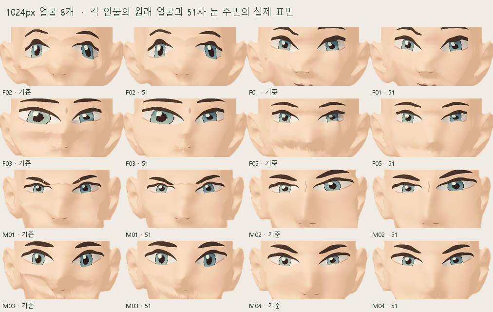
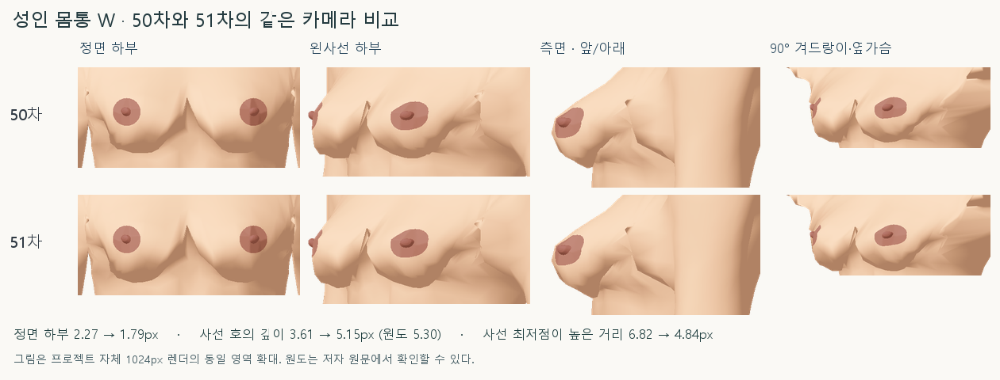

눈 밑 밝은 판과 측면 눈꺼풀
눈 위 부품을 차례로 숨긴 그림에서 밝은 판이 없어지지 않아 피부 깊이를 조사했습니다. 단순 복원은 일부 삼각형 방향을 뒤집어, 기존 면 방향을 지키는 제약을 더했습니다. 새로 본 설정과 장면에서도 다시 확인했습니다. 프리렌의 별도 측면 위눈꺼풀 오차는 2.341→1.971px였으나 힘멜의 기존 측면은 더 어긋났습니다. 힘멜은 기존 원형으로 열리며 수동 비교가 가능합니다.
51차 · 얼굴 8개와 성인 가슴 89개 선택 · 자체 제작·검증 단계
모델을 고른 뒤 ‘부위 → 비교 원형’에서 보존 원형과 새 시험을 교대하세요. 한 창의 형상을 고정하면 옆 창에서 다른 형상으로 바꾸어 같은 방향에서 맞댈 수 있습니다. ‘보기 → 이 창의 구도’에서 얼굴·상체·전신을 창마다 고릅니다.
눈 밑의 밝은 판은 눈꺼풀 부품을 숨겨도 남았습니다. 34차와 같은 피부점을 찾아 깊이와 면 방향을 조정했습니다. 8개 얼굴을 14방향·1024/96/48px에서 기준과 시험형으로 672번 렌더했습니다. 여덟 얼굴 모두 원화와의 눈 밑 밝기 변화 차이가 줄었고, 새로 뒤집힌 면은 없었습니다. 힘멜의 측면을 비롯해 위눈꺼풀 위치가 더 어긋난 조건은 남았습니다.

지정 논문에서 사선·측면과 같은 계열의 정면 도판을 찾아 비교했습니다. W 사선 하부 호의 깊이는 3.61→5.15px로 원도의 5.30px에 가까워졌습니다. 실제 가장 낮은 피부점은 아직 원도보다 4.84px 높습니다. 89개 선택 가운데 46개에 교정 후보를 두고 43개는 50차 원형을 유지했습니다. 46개 중 26개에는 대응 도판이 있고 20개는 기하 검사만 통과했습니다.

페른을 네 창에 놓고 전신 정면·상체 사선·얼굴 측면·머리 뒤 사선을 각각 1024px로 돌렸습니다. 남녀 2~8등신의 14개 전신은 같은 표시 키에서 비교할 수 있습니다. 창의 구도를 바꾸어도 원형·포즈·보던 방향은 유지됩니다.
눈 위 부품을 차례로 숨긴 그림에서 밝은 판이 없어지지 않아 피부 깊이를 조사했습니다. 단순 복원은 일부 삼각형 방향을 뒤집어, 기존 면 방향을 지키는 제약을 더했습니다. 새로 본 설정과 장면에서도 다시 확인했습니다. 프리렌의 별도 측면 위눈꺼풀 오차는 2.341→1.971px였으나 힘멜의 기존 측면은 더 어긋났습니다. 힘멜은 기존 원형으로 열리며 수동 비교가 가능합니다.
W의 B3는 나아졌지만 A5 사선의 하부선 오차는 2.31→3.41px, 간격 260mm 정면은 3.11→3.72px로 커졌습니다. 논문의 두 도판이 바꾸는 형상 변수가 달라 하나의 W를 계속 아래로 내리면 양쪽이 같이 맞지 않습니다. 시점별 결과와 유형별 적합 범위를 보존합니다. 후속 교정은 바닥 높이, 둥근 호, 흉벽 접선의 오차를 따로 측정합니다.
중립의 하부 곡선이 좋아진 유형 중 팔 90°에서 표식 가림이 커지는 사례를 발견했습니다. 민감 유형 셋은 50차와 같은 피부 삼각형에 표식을 바인딩하고 한 유형은 강도를 낮췄습니다. 전체 가림 화소 합계는 팔 90°에서 568→559, 팔 178°에서 692→691이었지만 정면은 472→474였습니다.
중립을 기준으로 처음 맞춘 W 전신 카메라는 팔을 178° 올리면 손끝이 128px 화면 위에 걸렸습니다. 손끝 높이와 중립 신장으로 고정 중심을 다시 잡았습니다. 최종 1024px 브라우저 재검에서 팔을 올린 전신의 불투명 영역은 33~979행으로, 손과 발이 모두 화면 안에 있었습니다.
페른의 왼측면과 뒤 사선을 동시에 띄우니 넓은 턱밑 띠 두 개와 귀 앞의 밝은 조각이 보였습니다. 기준 그림, 화면 위치, 재현 카메라와 피부 구간을 다음 회차에 전달했습니다. 52차에서는 피부의 실제 두께, 법선, 다른 면의 가림을 나눠 고칩니다.
52차로 넘긴 결함 위치와 검토 조건58차 이후 얼굴·가슴 몫에 행동과 기기 검사를 넣은 계획을 철회했습니다. 다음 회차의 30%는 형상 내실을 고치는 데 쓰고, 70%는 모델링·리깅·벌징·애니메이션과 그 범위에서의 외형 조합에 씁니다. 판매 가능한 품질은 소비자가 이 부분에 기꺼이 돈을 내고 싶을 만큼 공들였는지로 판단합니다. 턱밑 띠와 일부 가슴 밑선이 원도에서 멀어진 현 상태는 교정 중입니다.
현행 계획과 단계 진입 조건